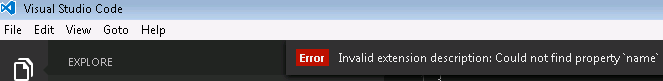

Customize Visual Studio Code
You can customize VS Code to work the way you like to work. Here is a quick primer on some of the most common ways to configure VS Code. Navigate to the relevant sections to learn more.
Tip: Several categories of customizations (Themes, Snippets, Language Support) can be shared in the VS Code Extension Marketplace. It’s always a good idea to look there first.
Customization Topics
| Category | Scenario | Marketplace |
|---|---|---|
| User and Workspace settings | Configure settings for an individual workspace or all workspaces. Word-wrapping, linting options and much more. | No |
| Key Bindings | Review all key bindings and change them to suit your needs. | Yes |
| Tasks | Tasks are a great way to connect VS Code with your broader development workflow. | No |
| Themes | Add additional color themes to VS Code. | Yes |
| Basic Language Support | Add additional basic language support (colorization and bracket matching) to VS Code via a TextMate bundle. You can also associate more file extensions with an existing language. | Yes |
| Snippets | Add additional snippets to your favorite language | Yes |
| Language | Configure the display language | No |
Next Steps
Here are a few pointers to help you on your way…
- Extension Marketplace - Browse the extensions others have shared.
- Yo Code - Generate a customization, then install it locally.
- Publishing Tool - Use the
vscepublishing tool to share your customization with others.
Common Questions
Q: How can I make my customization get loaded into VS Code on start-up?
A: If you move a copy of your customization into your .vscode/extensions folder it will be loaded up as VS Code is started.
Q: What are the valid fields in the package.json (extension Manifest) file?
A: We have extended the package.json to include the required fields for customization and extension loading/distribution. We have an overview of the optional and mandatory sections of the extension manifest available.
Q: Can a package.json contribute more than one customization?
A: Yes, the contributes attribute can take a comma delimited list of contribution types and, as you’ll notice from the json above, each contribution type takes an array (e.g. "themes": [ ]).
Q: I created a new customization but I don’t see it displayed in VS Code?
A: Make sure you have copied all of the generator’s output files to a new folder under your .vscode/extensions folder (e.g. “.vscode/extensions/cooltheme”) and that you have restarted VS Code after installing the customization.
On startup, if VS Code detects an issue with a customization, you will see an error message which can aid in debugging your customization.
